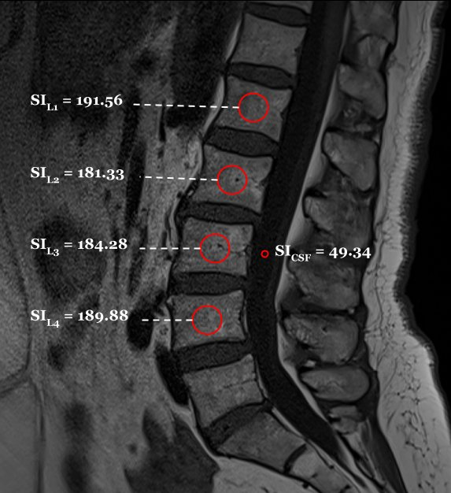
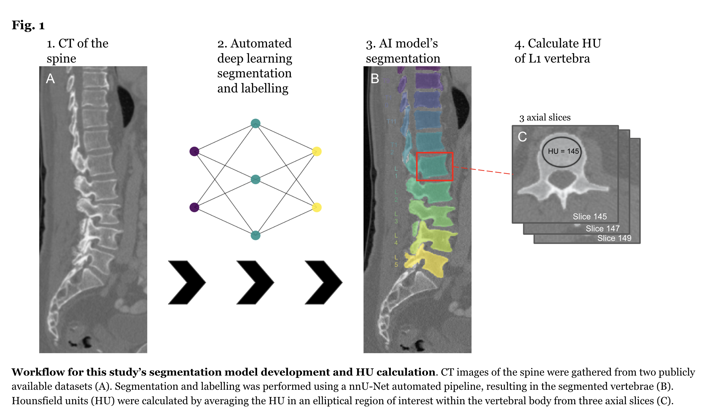
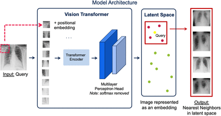
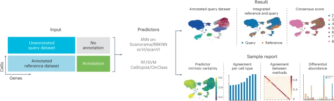
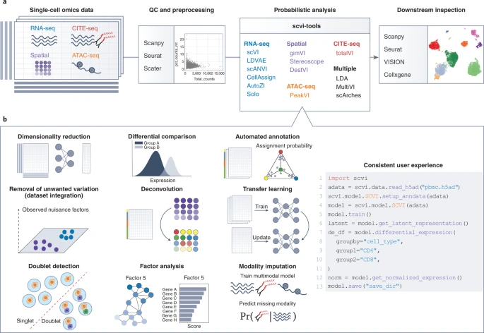

Research
My research focuses on the application of artificial intelligence and machine learning in medicine, particularly in spine imaging, clinical language models, and computational biology. I'm interested in developing tools that can assist clinicians in diagnosis, treatment planning, and understanding complex biological systems. Work that became a paper is listed under papers, with any meetings where it was also presented; work shown only as a talk or poster is listed under presentations and posters.
Papers

Automated Vertebral Bone Quality Score Measurement on Lumbar MRI Using Deep Learning: Development and Validation of an AI Algorithm
- Rapid Fire oral presentation, CNS Annual Meeting 2024, Houston, TX (abstract published in Neurosurgery 2025;71(Suppl 1))
Poor bone quality predicts screw loosening, cage subsidence, and proximal junctional failure after spine surgery, but many patients reach the operating room without a DEXA scan. The vertebral bone quality (VBQ) score measures bone health from the routine T1-weighted lumbar MRI every surgical patient already has, by dividing the L1-L4 vertebral body signal by the CSF signal. Placing those regions of interest by hand is slow and varies between raters, so we automated it: a YOLOv8 detector trained on the SPIDER dataset (257 patients) finds the vertebral bodies, and a Gaussian mixture model locates CSF behind L3. On 47 surgical patients, vertebral body detection reached a precision of 0.94 and mAP@0.5 of 0.94, and AI-derived VBQ agreed with two human raters with ICCs of 0.88 and 0.93 (human vs. human 0.95) and Pearson correlations of 0.86 and 0.90.

Artificial Intelligence Image Analysis for Hounsfield Units in Preoperative Thoracolumbar CT Scans: An Automated Screening for Osteoporosis in Patients Undergoing Spine Surgery
- Oral presentation, Spine Summit 2024 (AANS/CNS Spine Section), Las Vegas, NV
- Rapid Fire oral presentation, AANS Annual Scientific Meeting 2024, Chicago, IL
We developed an AI model for automatically detecting Hounsfield unit values at the L1 vertebra in preoperative thoracolumbar CT scans. This model serves as a screening tool for osteoporosis in patients undergoing spine surgery. Using the nnU-Net framework for segmentation, our model achieved a high Dice coefficient of 0.91 and strong agreement with human experts (Pearson correlation: 0.96).

Semantic Retrieval of Similar Radiological Images using Vision Transformers
This study evaluates the efficacy of using Vision Transformer (ViT) based image embeddings for content-based image retrieval (CBIR) tasks for chest X-ray and CT images. We found that our approach performs well on both visual and semantic recognition tasks, providing a promising method for retrieving similar medical images to assist in diagnosis.

Consensus Prediction of Cell Type Labels in Single-Cell Data with popV
We proposed popular Vote (popV), an ensemble of prediction models with an ontology-based voting scheme for cell-type classification in single-cell sequencing analysis. Unlike existing methods, popV provides uncertainty scores, enabling confident annotation of most cells while highlighting populations that are challenging to annotate by label transfer. This approach helps reduce the load of manual inspection and focuses attention on the most problematic parts of the annotation process.

A Python Library for Probabilistic Analysis of Single-Cell Omics Data
We developed a Python library for probabilistic analysis of single-cell omics data. Our library implements methods for core computational tasks in single-cell analysis, including dimensionality reduction, cell clustering, cell-state annotation, removal of unwanted variation, analysis of differential expression, and joint analysis of multi-modal omics data. The library provides principled ways to capture uncertainty in biological systems and is convenient for decomposing the many sources of variation in omics data.
Presentations & posters
2026
-
PosterUpcomingAn Interpretable Risk Calculator for Glioblastoma Survival Combining Human-Readable MRI Features, MGMT Methylation, and Clinical Variables
-
OralEstimating the Safety of Early Discharge Using Uplift Modeling: A Causal Machine Learning Analysis of the NSQIP Database
-
Oral
-
OralCan Large Language Models Accurately Extract Data from Operative Notes on Grade II Spondylolisthesis? A QOD Spine CORe Study
2025
-
Rapid Fire oral
-
Podium
-
Oral
-
OralDeep Learning Prediction of DEXA T-Score on MRI Outperforms Vertebral Bone Quality Score in Osteoporosis Detection
-
AbstractAn Artificial Intelligence Tool to Prevent Wrong-Side Hand Surgery: A Feasibility Study
-
AbstractDeep Learning for Pediatric Wrist Fracture Detection
-
AbstractDeep Learning for Detection of Cervical Fractures
2024
-
Oral